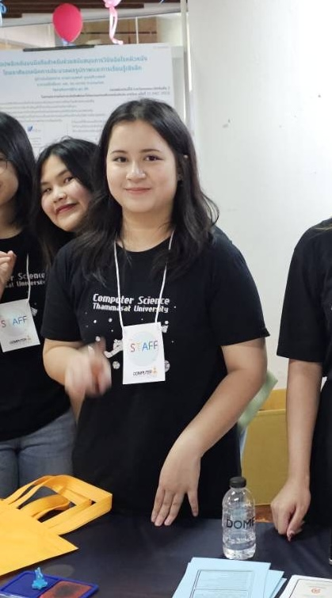

friend1's future hilights
Information

Information
3 targets of my future
1. Having wonderful times in univesity
2. Having great job and enough salary
3. Having a happy life
In Terms Of Future Work
🍎After graduation, I aim to work as a Software Developer, particularly in a company that develops technology for education.
I believe that learning is a key factor in improving people's lives.
Additionally, I plan to further my studies in Artificial Intelligence (AI) to enhance my expertise in developing programs that can learn and adapt in the future.
I hope that in the next five years, I will be able to develop applications that benefit education and society on a larger scale.
🌐Dreams For The Future
🍎I will be good at programming to the point where I can go to work in Japan, get married, have a family, and be happy every day.

In the future, I see myself graduating with a Computer Science degree from Thammasat University, ready to take on new challenges. I plan to work at a tech company, gaining valuable experience and building connections. Along the way, I want to use my knowledge to support and enhance my family business, applying what I’ve learned to help it grow and succeed. At the same time, I’ll keep exploring new interests and balancing personal growth with career aspirations to create a meaningful and fulfilling life.
อนาคตที่กระผมมุ่งหวัง คือ การได้ทำงานเป็น Data Analyst หรือ Data Scienctist ในบริษัทการเงินอันดับต้น ๆ อย่าง KBTG, SCBx, BBL, หรือ KTB
แต่หากมีโอกาสก็อยากไปลองทำงานกับบริษัทต่างชาติ เป้าหมายของผมคือการหาเงินให้ได้มาก ๆ มาสร้างความมั่งคั่งและสร้าง Connection ใหม่ ๆ ให้กับครอบครัว รวมถึงต้องการมีอิสรภาพทางการเงินอย่างแท้จริง เพื่อที่่จะสามารถสร้าง Productivity ให้กับโลกได้อย่าง ไม่ต้องนึกถึงเรื่องกำไรขาดทุน

Information

In the part of a semester.
I have studied many subjects that make me think about connecting various things, such as Statistics, C language, preliminary Web Applications and The coolest subject is Discrete math.
My path became more clear.
I'm also interested in Software development and AI Machine Learning but still can't decide on a future job. However, I would like to do some business in abroad.
It is expected that these things will not only in Thailand but the whole world will be aware of.
Then when I have more enough experience of my work. I will pass on knowledge to children.